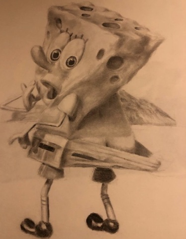

Portfolio About Contact
Hi, I am Ysabella "Ysabel" Dawana and I am a traditional artist who specializes in two different practices: black&white drawing and oil painting (and I am currently relearning how to paint with watercolor and goauche). I have been clutched into the art world since 2013 when I found my true passion for drawing. It stuck with me ever since. I graduated with an associates in Studio Arts in December of 2023 with a degree in Studio Arts in Mission College in Santa Clara and I am currently attending San Jose State University hoping to earn a bachelor of arts degree in Art with emphasis of studio practice in pictorial. Soon after I graduate, I might go for a masters degree in Pictorial, but I have not decided when it is the right time.
Digital media art as a whole is not my strong suit but it is mandatory that I have to take a beginning digital media art class in order to satisfy the requirements of to obtain my bachelors degree in this particular art field. However, I have been willing to learn the basics of some aspects of digital media art production and I have at least developed some of these techniques from this practice or course. Some of my inspirations of my DMA works are snebtor, my cousin, and Google images.
Here's some of my work that I've done outside of DMA
